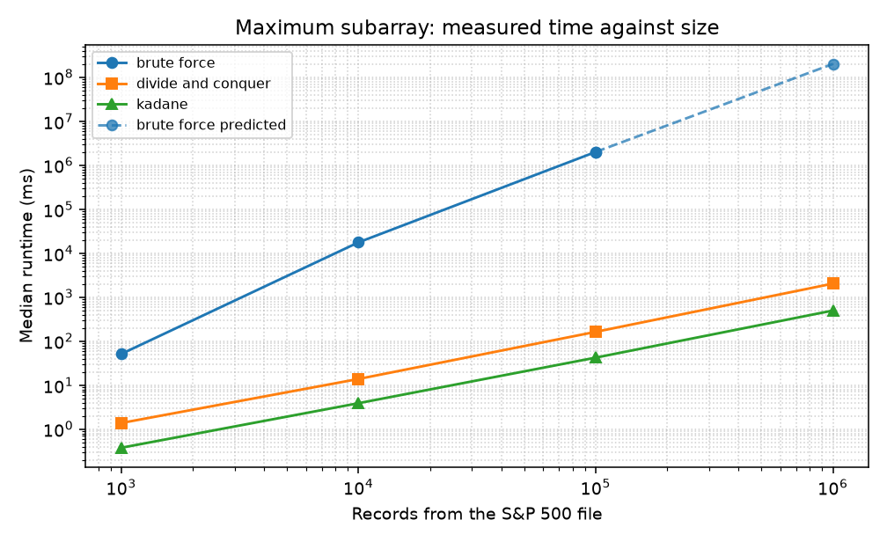
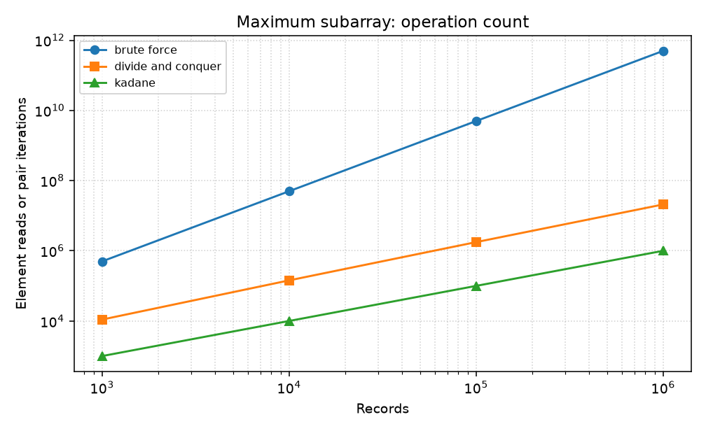
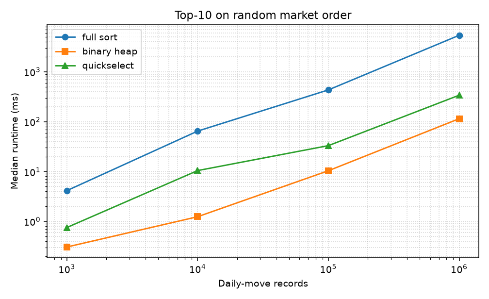
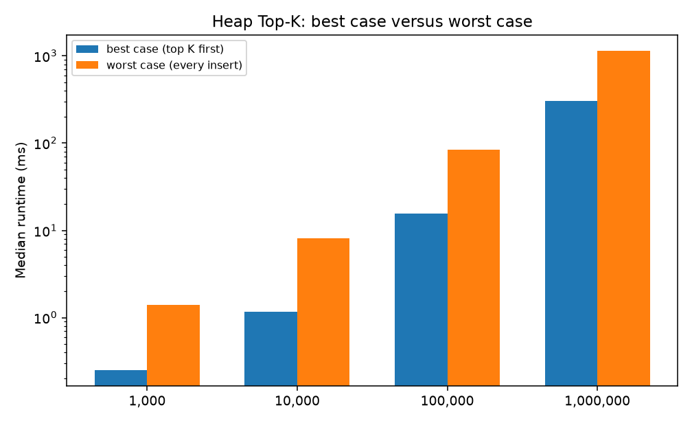

A price series looks like a finance problem and an algorithms problem at the same time. Once daily changes replace prices, the best single buy and a later sell is the maximum-subarray problem: find a contiguous block whose sum is at least as large as every other block. Ranking records is the selection problem called Top-K. Both problems have several correct algorithms whose asymptotic costs are far apart. This paper implements those algorithms, proves the versions we ship, and measures them on prefixes of the downloaded Kaggle CSV at 1,000, 10,000, 100,000, and 1,000,000 records.
The implementations are brute force, the CLRS divide-and-conquer recurrence, and Kadane's one-pass scan, plus Top-K by merge sort, a size-10 binary heap, and quickselect. Each algorithm is stated in pseudocode, with a correctness argument and best, average, and worst-case time and space. The experiment reports two metrics. The first is wall-clock time: the median of 5 trials through 10,000 records, and one brute-force trial at 100,000 records. The second is an operation count: pair iterations, element reads, or comparisons. Brute force is not executed at 1,000,000 records. That runtime is an n² projection from the 100,000-record measurement and is marked as a projection. The operation count at that size is still exact.
The last sections separate a slow algorithm from a hard problem. Maximum subarray is in P. A cardinality-constrained portfolio problem built on the same prices is NP-hard. Speeding up the Python loops does not change that classification. Four course reflections, labeled A through D, close the paper. They match the catalog topics of CPS 3440: asymptotic analysis, divide and conquer, advanced data structures, and NP-completeness.
Let P be adjusted closing prices. The change array is A[i] = P[i+1] − P[i], stored as an integer number of micro-dollars. Then A[start] + … + A[end] = P[end+1] − P[start]. We return the maximum positive sum and, among such windows, the earliest start and then the earliest end. If no positive window exists, the result is the empty trade, profit 0. That rule is part of the specification, not an accident of one implementation, because the three programs are required to return the same object.
Top-K uses the total order (higher score, then earlier name). In the command-line report the score is the buy-and-hold return of one stock, in basis points, and there are 472 scores. That n is too small for a scaling plot. The scaling study therefore scores every day-to-day move in the file. There are 2,703,059 such records. A prefix of length n is a legal Top-K instance: "which K daily moves were the largest?" It is a different product question from the 472-stock ranking, and the paper does not pretend otherwise. It is the same algorithm on real market numbers at the four required sizes.
Every measurement in this paper was run on the downloaded Kaggle CSV SP500_Historical_Data.csv from jacksaleeby/s-and-p500-historical-data. Columns are Ticker, Date, Open, High, Low, Close, Adj Close, and Volume. The file has 2,703,531 rows, 472 tickers, and dates from 3 January 2000 through 20 February 2026.
prefix[0] ← 0
for i ← 0 to n−1: prefix[i+1] ← prefix[i] + A[i]
for start ← 0 to n−1:
for end ← start to n−1:
consider prefix[end+1] − prefix[start]
By induction, the prefix difference equals the window sum, so every nonempty window is considered exactly once. The retained window is optimal under the earliest-window rule, and a fully negative array leaves the empty trade in place. Time is Θ(n²) in the best, average, and worst case, because the loops do not depend on the values. Extra space is the prefix, Θ(n). A running-sum formulation uses Θ(1) extra words and the same quadratic bound. We keep the prefix form because each window is then a subtraction rather than a restarted addition, which is the version that was timed.
DIVIDE(low, high):
if low = high: return the element when it is positive, else no trade
mid ← floor((low+high)/2)
return best of DIVIDE(low, mid), DIVIDE(mid+1, high), CROSS(low, mid, high)
CROSS: maximum suffix ending at mid, plus maximum prefix starting at mid+1
Proof by induction on the length of the interval. A one-element interval is immediate. For a longer interval, an optimal window is wholly on the left, wholly on the right, or it contains both mid and mid+1. The recursive calls return optimal answers for the halves. A crossing window must be some suffix of the left half plus some prefix of the right half, and the two scans maximize those pieces, breaking ties toward the earlier index. The best of the three candidates is therefore optimal for the whole interval. The recurrence T(n) = 2T(n/2) + Θ(n), with T(1) = Θ(1), solves to Θ(n log n) by the Master Theorem. Every input pays the same scans, so best, average, and worst time agree. Extra space is the Θ(log n) recursion stack.
current ← 0; start ← 0; best ← empty
for i ← 0 to n−1:
if current < 0: current ← 0; start ← i
current ← current + A[i]
if current > 0: keep the better of best and [start, i]
Suppose a positive optimal window is [p, q]. The running sum from p cannot become negative at any r inside the window. If it did, [r+1, q] would beat [p, q]. Kadane therefore does not reset inside [p, q], and when the index reaches q the current sum is at least the optimal sum. The recorded best cannot exceed every real window sum, so it is optimal. The empty result covers arrays with no positive window. The loop is Θ(n) in every case and uses Θ(1) extra words. The bound is asymptotically tight for this problem, because any correct algorithm must inspect every entry.
SORT(items, k): sort by (−score, name) and return the first k
HEAP(items, k): min-heap of size at most k, worst record at the root
push while the heap has room
if the next record beats the root, replace the root
sort the surviving k records
The sort is correct because it realizes a total order. Merge sort solves T(n) = 2T(n/2) + Θ(n), so best, average, and worst time are Θ(n log n), with Θ(n) extra space. An already ordered list does not fall to linear time. The heap maintains a different invariant: after it fills, every record left outside is worse than the root. A record that belongs in the final answer can be rejected only if k better records are already inside, which is a contradiction. Worst-case time is Θ(n log k), when every record enters. Best-case time is Θ(n + k log k), when nothing after the first k records enters. Extra space is Θ(k) plus the final merge sort of those k items. For random scores and a small fixed k, the expected number of successful insertions after the heap fills is far below n, so a measured "average" can look closer to linear than to n log k. We report that as a fact about expectation, not as a replacement for the worst-case bound. Quickselect places the kth record in average linear time and worst-case quadratic time, then merge-sorts those k records.
The production functions are the ones timed. An instrumented twin is used only for comparison counts, where the count depends on the data. Pair iterations for brute force are n(n+1)/2. Kadane iterations are n. Divide-and-conquer reads are counted by a recursion on the indexes alone, so they do not depend on prices and can be evaluated at n = 1,000,000 in negligible time. Each timing trial calls the function on the same prefix. We report the median, and the raw samples are stored in results/results.json together with the Python version and the CPU. Peak traced memory is recorded once per cell with tracemalloc, as a check that the space column is not fiction, but the official second metric is the operation count.
Brute force at 100,000 records is one trial, about half an hour in this interpreter. Five trials at that size would not change the shape of the curve, and five trials at 1,000,000 records would be days. The constant c in c·n² is the 100,000-record time divided by 100000². The 1,000,000-record cell uses that constant and is labeled projected. Figures draw that point with a dashed line. Calling a projection a measurement would make the theory-versus-observed section dishonest.
The time per pair is not a fixed constant. On the market prefix it moved from 103 ns at 1,000 records to 353 ns at 10,000 and 402 ns at 100,000. A positive window allocates a candidate, and a longer prefix of Python integers also stops fitting in cache. The pair count is still exactly n(n+1)/2. The same function on zero-mean uniform integers took 324 ns per pair at 1,000 records and 404 ns per pair at 10,000. Zero-mean data does not remove the cost: many of those windows are still positive, and the values are large. The timings were taken on Python 3.12.3 (Intel(R) Xeon(R) Processor). The 1,000,000-record projection uses the measured 100,000-record market trial, so it already includes that market-data constant. It is still a projection.
Heap inputs have three shapes. Market order is the order the file produced, used as the ordinary case. Best case puts the true top K first, so later records should lose one comparison against the root and never enter. Worst case feeds scores from low to high so each arrival replaces the root. Merge sort and quickselect are timed on those same three arrangements. Merge sort does not become linear on a sorted layout: every size still pays Θ(n log n) comparisons. The clock can still move because the prepared layouts are permutations and lose the allocation-order locality of the original prefix. Both columns are reported so that a comparison count is not silently rewritten as a runtime.
At 10,000 changes, the brute-force median was 17.67 s and Kadane's median was 3.893 ms, about 4537 times faster for the linear scan. Divide and conquer at that size took 13.838 ms. The log-log slope of median time from 1,000 to 10,000 records is 2.54 for brute force, 1.00 for divide and conquer, and 1.01 for Kadane. A pure power n² has slope 2, a pure line has slope 1, and n log n sits a little above 1 on a short range. From 10,000 to 1,000,000, Kadane's slope is 1.05 and divide-and-conquer's slope is 1.08.
| Algorithm | 1,000 | 10,000 | 100,000 | 1,000,000 |
|---|---|---|---|---|
| brute force | 51.346 ms ops 500,500 | 17.67 s ops 50,005,000 | 33.5 min ops 5.000e+09 | 55.8 h projected ops 5.000e+11 |
| divide and conquer | 1.380 ms ops 10,976 | 13.838 ms ops 143,616 | 163.047 ms ops 1,768,928 | 2.04 s ops 20,951,424 |
| kadane | 0.378 ms ops 1,000 | 3.893 ms ops 10,000 | 42.274 ms ops 100,000 | 497.060 ms ops 1,000,000 |

Figure 1. Median runtime. Sizes through 10,000 records are five-trial medians. Brute force at 100,000 records is one trial. The dashed segment is the n² projection to 1,000,000 records and was not timed.

Figure 2. Operation counts. Brute-force pair iterations are n(n+1)/2 at every size, including the sizes that were not timed. Divide-and-conquer reads come from a dry recursion on the indexes.
The operation plot is the cleaner Big-O picture. Brute-force iterations grow by about 100 each time n grows by 10, which is the square: 500,500 pairs at 1,000 records and 50,005,000 pairs at 10,000. Kadane's count is exactly n. Divide-and-conquer reads grow slightly faster than linear, as n log n requires: 10,976 reads at 1,000 records and 20,951,424 reads at 1,000,000. The clock does not copy those exponents exactly. Divide and conquer's wall-clock slope from 10,000 to 1,000,000 records is 1.08, nearer a line than the read-count slope on the same range. Python recursion allocates a result object on every call, and that linear traffic is large next to the extra log factor. The paper therefore does not claim that the clock alone measured the Master Theorem. It claims that the read count follows the recurrence, that the clock stays far below the quadratic projection, and that Kadane remains the practical algorithm. A slope estimated from two sizes can miss a model by a few tenths when a constant term is present. The operation column is what we trust when the clock and the model disagree by that amount.
At one million daily moves, with k = 10, the random-order sort median was 5.41 s and the random-order heap median was 114.929 ms. Sort made 18,638,382 comparisons and the heap scan made 1,000,383. The heap's best-case median at that size was 307.040 ms and its worst-case median was 1.14 s. Slopes from 1,000 to 1,000,000 records on market order were 1.04 for the sort and 0.86 for the heap.
| Algorithm | 1,000 | 10,000 | 100,000 | 1,000,000 |
|---|---|---|---|---|
| full sort | 4.152 ms comps 8,691 | 64.833 ms comps 119,994 | 434.522 ms comps 1,532,412 | 5.41 s comps 18,638,382 |
| binary heap | 0.307 ms comps 1,178 | 1.244 ms comps 10,237 | 10.409 ms comps 100,314 | 114.929 ms comps 1,000,383 |
| quickselect | 0.756 ms comps 2,207 | 10.474 ms comps 30,863 | 33.150 ms comps 202,972 | 340.099 ms comps 1,925,883 |

Figure 3. Merge sort, heap, and quickselect on the market-order prefix. All three were timed at every size.

Figure 4. Heap wall-clock time on the prepared best-case and worst-case layouts. Comparison counts, not these bars alone, are the case split: at one million records the best case does 1,000,009 comparisons and the worst case does 6,066,615.
The product run is the small-n check that the finance answer is stable. On Apple's 6,573 closes in the Kaggle file the three window algorithms returned buy 8 October 2002 at $0.20 and sell 2 December 2025 at $285.92, profit $285.72 per share. On 472 buy-and-hold returns, sort and heap returned the same top 10, led by NVDA at 210,811.11 percent. Quickselect matched them as well. Those identities are unit-tested on synthetic arrays, including the CLRS figure whose maximum subarray sums to 43.
Where the model is a tight Θ bound that does not depend on the data, the measurements follow it. Brute force's exponent from 1,000 to 10,000 records is 2.54, next to the model value 2. The 100,000-record point is a measurement rather than a second projection, and its operation count is exactly n(n+1)/2. Kadane's operation count is exactly n, and its wall-clock slope from 1,000 to 1,000,000 records is 1.04. The first step is already near 1. Fixed overhead does not hide the line, because even the 1,000-record median is a few tenths of a millisecond of real loop work rather than an empty call. Divide and conquer is the case where the two metrics part company. The read count grows like n log n. The clock grows only slightly faster than linear, with slope 1.08 from 10,000 to 1,000,000 records, because the Python call overhead is a large linear term beside a small log factor. The ranking the textbook predicts is still the ranking the clock shows. At 10,000 records brute force takes 17.67 s, divide and conquer takes 13.838 ms, and Kadane takes 3.893 ms. The n² projection puts brute force near 55.8 h at one million records. That cell was not executed. Kadane's measured median at the same size is 497.060 ms.
The heap is the disagreement we expected, and it has to be read in two columns. With k = 10, a late random record rarely beats the current root, so the comparison count on market order at one million records is 1,000,383, against 1,000,009 when the true top K are already first and 6,066,615 when every record is inserted. Random order is the easy case in the comparison model, just as the best-case bound Θ(n + k log k) describes. An engineer who quotes only Θ(n log k) will overestimate this file. An engineer who quotes only the random-order graph will be surprised by an ascending stream, whose median was 1.14 s.
The wall clock does not copy that comparison story at the largest size. The market-order heap took 114.929 ms. The prepared best-case layout took 307.040 ms, slower than market order, even though it performed slightly fewer comparisons. The prepared arrays are permutations of the original objects, so the scan chases pointers instead of walking allocation order. Figure 4 still shows the worst case above the best case, which is the right direction, but it is not a picture of "best case equals fastest clock." The operation count is the picture of the case analysis. Merge sort does not get that split. On the ordered layout the comparison count at one million records is 9,884,992, and on market order it is 18,638,382. Both stay Θ(n log n). The clocks at that size are 4.29 s, 3.82 s, and 5.41 s. The comparison win is real and the clock win has mostly been swallowed by the cost of touching every object. At 1,000 records the clock still shows the run: the ordered sort median is 3.234 ms and the market-order sort median is 4.152 ms. The required comparison is therefore not the sentence "the heap is faster." On market order the heap is faster at every size we timed. On an already ordered list, merge sort still pays Θ(n log n) comparisons, so it does not become the cheap linear pass a run-detecting sort would be. On the ascending stream the heap pays for a replacement at every index.
Space followed the same split. Kadane's traced peak stays under 500 bytes at every size. Divide and conquer's peak grows from a few kilobytes along the recursion, not with a second copy of the array. Brute force holds an n-word prefix: about 40 KB at 1,000 records and about 400 KB at 10,000. The heap's traced peak stays at about 1,144 bytes for every size, which is the size-K node storage. The full sort's peak at one million records is about 17 MB, the temporary storage of the sort. None of these space costs is why the quadratic algorithm fails. Time is why it fails. The pair count n(n+1)/2 is why the 1,000,000-record trial stays a projection after the 100,000-record measurement.
Efficiency is a property of an algorithm. Hardness is a property of a problem. Brute force for maximum subarray is inefficient. It is correct, it is polynomial, and it is the wrong polynomial. Kadane shows the problem is solvable in linear time, so the problem is in P. No improvement in the constant factor of the double loop, and no rewrite in C, changes the fact that a quadratic algorithm and a linear algorithm are different algorithms for an easy problem. The dashed line on the runtime figure is an efficiency statement: this implementation will not finish a million-record brute-force trial in a class period. It is not a hardness statement. We already have a linear algorithm that does finish.
Hardness shows up when the question changes shape. Cardinality-constrained mean-variance portfolio selection asks for a subset of at most m assets that is optimal for a quadratic utility of expected return and covariance. That problem is NP-hard. The proof idea is the usual one: a polynomial-time solver for every covariance pattern would solve a known NP-complete packing problem. Our Top-K routine does not solve it. Top-K maximizes a linear score with no interaction between the chosen names. The moment the score of a set is not the sum of scores of its members, "keep a heap of size K" is no longer optimal, and for general interactions one should not expect a polynomial algorithm unless P = NP.
The course distinction is easy to lose in a timing table. A group can make brute force look smarter with a faster language and still have an inefficient algorithm. A group can also discover that some neighboring trading question has no Kadane-style rescue. The right response to the first situation is a better algorithm. The right response to the second is an approximation, a heuristic with a stated gap, or a proof that a polynomial algorithm would collapse P and NP. Measuring c·n² more carefully does not cross that line.
Question. For each algorithm, which of the best, average, and worst cases describes the S&P 500 prefixes, and which algorithm should the tool run?
The change arrays are ordinary market data, not an adversarial pattern, but brute force, divide and conquer, and Kadane do not have a faster best case in our code. Their loops always run. The bound that describes the file is therefore the only bound: Θ(n²), Θ(n log n), and Θ(n). The tool can run all three when n is a few thousand, because the agreement check is worth a second. It should trust Kadane when n grows. The sort-versus-heap choice does depend on the case. Market order plus k = 10 behaves like the heap's easy case. The tool still implements the worst-case algorithm correctly; the benchmark is what tells a reader not to quote only the worst-case expression when they describe this file.
Question. Why is the crossing answer enough to complete the recurrence, and did the clock grow like n log n?
The crossing argument is the whole proof. Without it, the two halves do not determine a window that straddles the midpoint, and induction fails. With it, every optimal window is produced by one of three recursive cases. The Master Theorem then turns the linear combine step into Θ(n log n), with no extra log factors hidden in the combine. The element-read count is the measurement that matches that bound: it grows faster than n and slower than n², from 10,976 reads at 1,000 records to 20,951,424 reads at 1,000,000. The wall-clock slope on the same inputs is lower, 1.08 from 10,000 to 1,000,000 records, because each recursive call allocates a result. We do not paper over that gap. The recurrence explains the reads. The clock explains which algorithm to ship. Kadane's median at one million records is 497.060 ms, against 2.04 s for divide and conquer. Divide and conquer remains the algorithm whose proof a reviewer can check from the three-way case split, and it remains in the repository so that check can be made against the code.
Question. When does the size-K heap beat a full sort, and what do the best and worst inputs do to that claim?
On market order at one million records, the heap's median was 114.929 ms with 1,000,383 comparisons, against the sort's 5.41 s and 18,638,382 comparisons. The heap wins that input because k stays 10 while n grows, and because a random late score rarely replaces the root. The worst-case layout removes the comfort in both columns: 6,066,615 comparisons and a median of 1.14 s. The best-case comparison count falls to 1,000,009, which is the Θ(n + k log k) bound in the data. The best-case clock does not fall with it. At one million records that prepared layout took 307.040 ms, slower than market order, because the objects are no longer in allocation order. Merge sort does not drop to a linear comparison count. Ordered inputs still take 9,884,992 comparisons, and the one-million-record clocks stay near the market-order sort. The smaller sizes still show the run in the clock: at 1,000 records the ordered sort takes 3.234 ms and the market-order sort takes 4.152 ms. The lesson is that the heap is the right structure when k is small and the input is not adversarial, and that a sorted run is a comparison result before it is a runtime result. The implementation keeps both algorithms, and the tests force them to return the same K names, including ties.
Question. This window is solvable in linear time. Which nearby market problem is NP-hard, and why does a faster implementation not move that problem into P?
Maximum subarray is in P because Kadane is a correct linear algorithm. Cardinality-constrained mean-variance optimization is NP-hard because the objective mixes the chosen assets through a covariance matrix; a polynomial algorithm for every such matrix would yield a polynomial algorithm for an NP-complete problem. Writing the quadratic double loop in a faster language multiplies c. It does not produce a polynomial-time portfolio solver, and it does not produce a subquadratic lower bound either. The reflection we owe the course is to say which of those two situations we are in before we celebrate a timing table. In this project the trading window is the first situation. We already replaced the inefficient algorithm. The interacting portfolio is the second situation, and it is not the program we claim to have solved.
The repository contains a command-line tool, tests, a four-size benchmark with a second metric, and a page that shows the same tables. On the downloaded Kaggle S&P 500 CSV the three window algorithms agree, and the three Top-K algorithms agree. The clocks follow the textbook order whenever the bound is tight and data-independent. They follow the finer best-case and worst-case story for the heap. Merge sort stays Θ(n log n) on every layout. Brute force at a million records is a projection, computed from the measured 100,000-record trial, and the exact pair count n(n+1)/2 is reported beside that projection. The problem those algorithms solve is easy in the complexity sense and still worth an algorithmic choice in the practical sense. Those are different claims, and the measurements support both.
Cormen, T. H., Leiserson, C. E., Rivest, R. L., and Stein, C. Introduction to Algorithms. MIT Press. Maximum-subarray section and the Master Theorem.
Bentley, J. Programming Pearls. Addison-Wesley. The linear maximum-subarray scan associated with Kadane.
Knuth, D. E. The Art of Computer Programming, Volume 3. Merge sort and the binary heap.
Bienstock, D. Computational study of a family of mixed-integer quadratic programming problems. Mathematical Programming (1996). Cardinality-constrained portfolio optimization is NP-hard.
Saleeby, J. S&P 500 OHLC stock data. Kaggle dataset jacksaleeby/s-and-p500-historical-data, file SP500_Historical_Data.csv. The measurements use that downloaded file.
Kean University. CPS 3440 Analysis of Algorithms. Undergraduate catalog, 2026–2027.